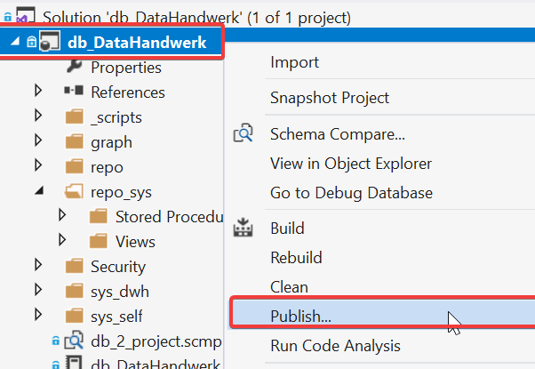
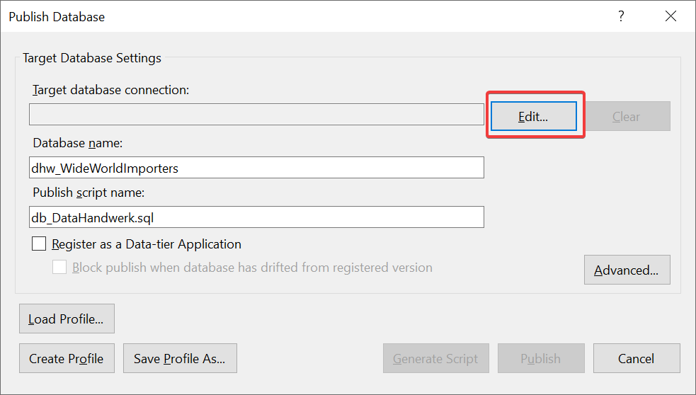
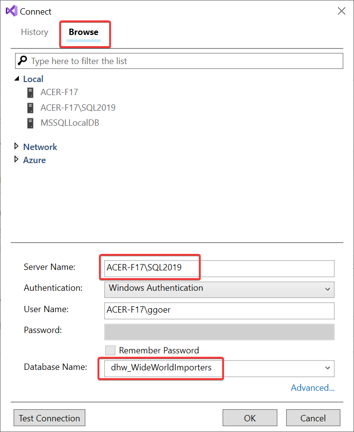
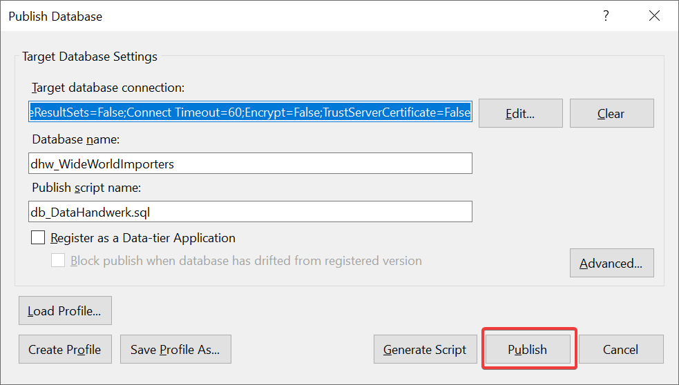
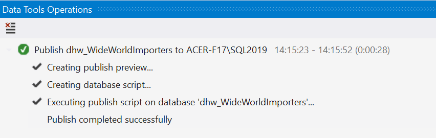
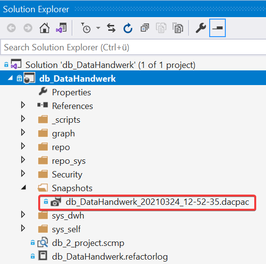
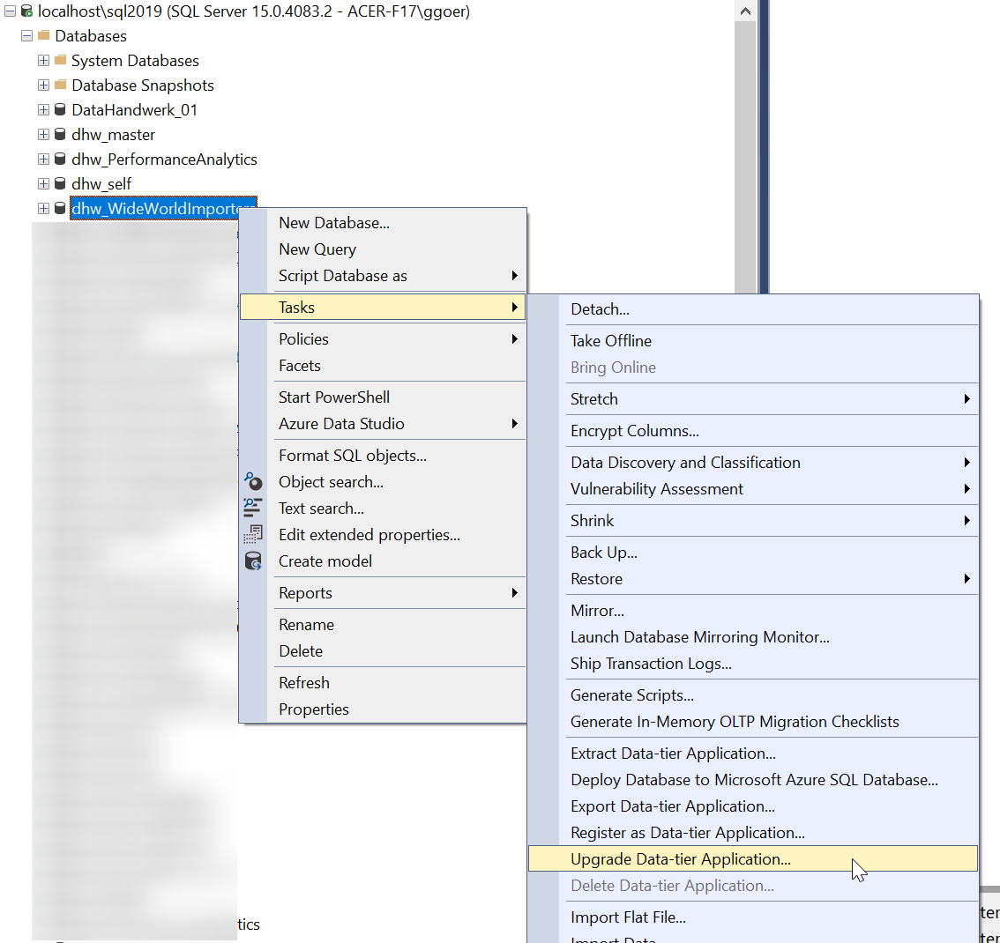
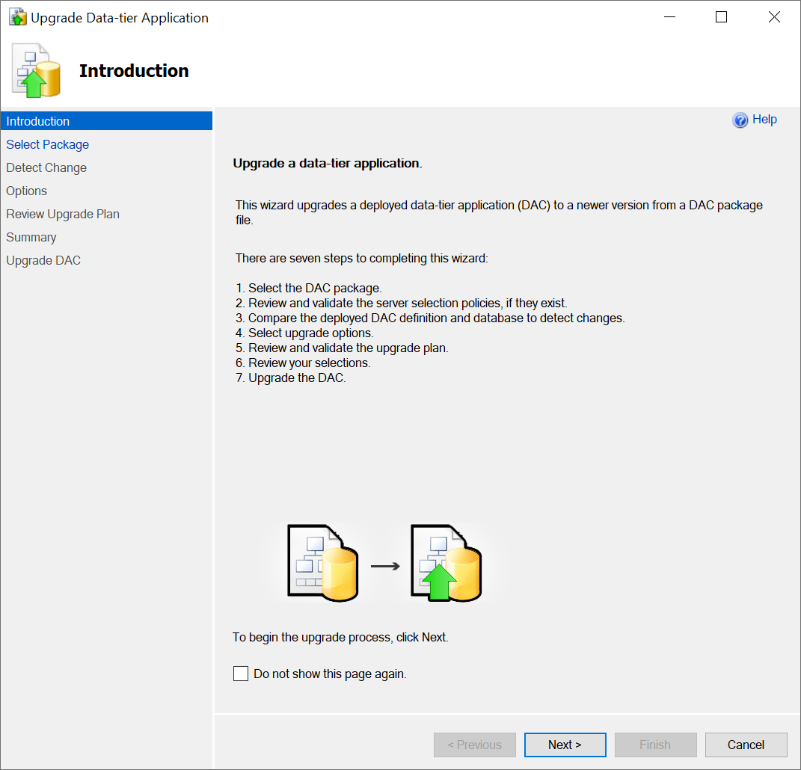
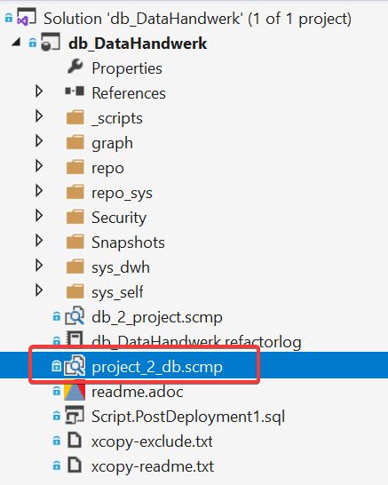
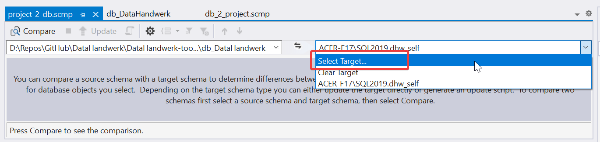

Create, update and connect repository database
Summary
-
create a new repo database
-
clone githup repository from project https://github.com/DataHandwerk/DataHandwerk-toolkit-mssql
-
deploy the database project db_DataHandwerk to your database
-
connect repo datatabase to dwh database using synonyms executing the storred procedure
[repo].[usp_connect_database]
1. Detailed
First we need to create a "repository database" and connect it with the "dwh database". Here are some excerpts from the architectur description:
== 02 Architecture Constraints
The project is based on Microsoft SQL Server (mssql):
SQL Server 2019 or aboveIt must always be possible for BI developers to use all mssql and Azure features in DWH databases.
a minimally invasive repository database supplements DWH database metadata
A repository database is externally connected to a DWH database via synonyms to system catalog views of the DWH database.
Changes can be made both in repository and in DWH database. Synchronization is required for this.
for additional minimal invasive interventions
extended propertiesare used, which can be assigned to many database objects and also columns, parameters etc.The synchronization concept takes into account that renaming and refactoring can be performed in the repository as well as in the DWH database.
The DWH database works without the repository and all traces of a repository can be removed (extended properties can be dropped).
1.1. create repo database
As an example, we use WideWorldImporters as dwh database.
-
create a new empty repository database
dhw_WideWorldImporters
dhwis an abbreviation for DataHandwerk.WideWorldImportersis used to mark that it is a repository forWideWorldImporters.
You can also use any other name for your repository database.
1.2. update repo database from database project db_DataHandwerk
The structure of the repo database must be updated from the dhw git (database project: db_DataHandwerk).
-
clone the project https://github.com/DataHandwerk/DataHandwerk-toolkit-mssql
-
using SQL Server Data Tools for Visual Studio, open the database project:
"D:\Repos\GitHub\DataHandwerk\DataHandwerk-toolkit-mssql\db_DataHandwerk\db_DataHandwerk.sqlproj"
Your folder could be another -
Now there are several options
-
use publish
-

-

-

-

-

-
-
use an existing dacpac (under snapshots) or create a dacpac
-

-
use VS Schema Compare, SSMS, Azure Data Studio (or other tools) to deploy the dacpac
-

-

-
follow the wizard
-
-
the dacpac also includes the postdeployment script
-
-
use Schema Compare
-
use the prepared schema compare and adapt it or create your own
-

-

-
-
1.2.1. post deployment
After the database is created, some tables need to be populated with data. For this purpose, a post deployment script is included in the project.
This is a one-time process that usually does not need to be repeated later.
The post deployment script will be executed, if you use publish or build, but you should execute it, when using schemacompare. You can also just copy the code from here and execute it.
Or you can skip the execution, as long as the content of this script is also called in the procedure [repo].[usp_connect_database].
/*
Post-Deployment Script Template
--------------------------------------------------------------------------------------
This file contains SQL statements that will be appended to the build script.
Use SQLCMD syntax to include a file in the post-deployment script.
Example: :r .\myfile.sql
Use SQLCMD syntax to reference a variable in the post-deployment script.
Example: :setvar TableName MyTable
SELECT * FROM [$(TableName)]
--------------------------------------------------------------------------------------
*/
EXEC repo.usp_init_spt_values
EXEC repo.usp_init_parameter1.3. connect repository database with dwh database, using synonyms
The repository database is connected to the dwh database using synonyms. Execute [repo].[usp_connect_database] to connect the synonyms to the correct DWH database.
[repo].[usp_connect_database] @dwh_database_name = 'WideWorldImporters'
/*
--example:
[repo].[usp_connect_database]
@dwh_database_name = 'WideWorldImporters'
*/
CREATE PROCEDURE [repo].[usp_connect_database] (@dwh_database_name NVARCHAR(128))
AS
--
--ensure existence of required parameters like 'dwh_database_name'
EXEC [repo].[usp_init_parameter]
--ensure [repo].[spt_values] is filled, otherwise extended properties will not be written into database
EXEC [repo].[usp_init_spt_values]
DECLARE @dwh_database_name_old NVARCHAR(128) = (
SELECT [repo].[fs_dwh_database_name]()
)
EXEC [repo].[usp_parameter_insert_update] @Parameter_name = 'dwh_database_name'
, @Parameter_value = @dwh_database_name
--this required every time, in case synonyms are corrupt or new synonyms have been added
--IF @dwh_database_name <> ISNULL(@dwh_database_name_old , '')
BEGIN
DECLARE @SQLString NVARCHAR(4000)
DECLARE @ParmDefinition NVARCHAR(500)
SET @SQLString =
'
DROP SYNONYM IF EXISTS [sys_dwh].[columns]
DROP SYNONYM IF EXISTS [sys_dwh].[computed_columns]
DROP SYNONYM IF EXISTS [sys_dwh].[default_constraints]
DROP SYNONYM IF EXISTS [sys_dwh].[dm_exec_describe_first_result_set]
DROP SYNONYM IF EXISTS [sys_dwh].[dm_sql_referenced_entities]
DROP SYNONYM IF EXISTS [sys_dwh].[extended_properties]
DROP SYNONYM IF EXISTS [sys_dwh].[foreign_key_columns]
DROP SYNONYM IF EXISTS [sys_dwh].[foreign_keys]
DROP SYNONYM IF EXISTS [sys_dwh].[identity_columns]
DROP SYNONYM IF EXISTS [sys_dwh].[indexes]
DROP SYNONYM IF EXISTS [sys_dwh].[index_columns]
DROP SYNONYM IF EXISTS [sys_dwh].[objects]
DROP SYNONYM IF EXISTS [sys_dwh].[parameters]
DROP SYNONYM IF EXISTS [sys_dwh].[schemas]
DROP SYNONYM IF EXISTS [sys_dwh].[sp_addextendedproperty]
DROP SYNONYM IF EXISTS [sys_dwh].[sp_updateextendedproperty]
DROP SYNONYM IF EXISTS [sys_dwh].[sql_expression_dependencies]
DROP SYNONYM IF EXISTS [sys_dwh].[sql_modules]
DROP SYNONYM IF EXISTS [sys_dwh].[tables]
DROP SYNONYM IF EXISTS [sys_dwh].[types]
CREATE SYNONYM [sys_dwh].[columns] FOR ['
+ @dwh_database_name + '].[sys].[columns]
CREATE SYNONYM [sys_dwh].[computed_columns] FOR [' + @dwh_database_name + '].[sys].[computed_columns]
CREATE SYNONYM [sys_dwh].[default_constraints] FOR [' + @dwh_database_name + '].[sys].[default_constraints]
CREATE SYNONYM [sys_dwh].[dm_exec_describe_first_result_set] FOR [' + @dwh_database_name + '].[sys].[dm_exec_describe_first_result_set]
CREATE SYNONYM [sys_dwh].[dm_sql_referenced_entities] FOR [' + @dwh_database_name + '].[sys].[dm_sql_referenced_entities]
CREATE SYNONYM [sys_dwh].[extended_properties] FOR [' + @dwh_database_name + '].[sys].[extended_properties]
CREATE SYNONYM [sys_dwh].[foreign_key_columns] FOR [' + @dwh_database_name + '].[sys].[foreign_key_columns]
CREATE SYNONYM [sys_dwh].[foreign_keys] FOR [' + @dwh_database_name + '].[sys].[foreign_keys]
CREATE SYNONYM [sys_dwh].[identity_columns] FOR [' + @dwh_database_name + '].[sys].[identity_columns]
CREATE SYNONYM [sys_dwh].[indexes] FOR [' + @dwh_database_name + '].[sys].[indexes]
CREATE SYNONYM [sys_dwh].[index_columns] FOR [' + @dwh_database_name + '].[sys].[index_columns]
CREATE SYNONYM [sys_dwh].[objects] FOR [' + @dwh_database_name +
'].[sys].[objects]
CREATE SYNONYM [sys_dwh].[parameters] FOR [' + @dwh_database_name + '].[sys].[parameters]
CREATE SYNONYM [sys_dwh].[schemas] FOR [' + @dwh_database_name + '].[sys].[schemas]
CREATE SYNONYM [sys_dwh].[sp_addextendedproperty] FOR [' + @dwh_database_name + '].[sp_addextendedproperty]
CREATE SYNONYM [sys_dwh].[sp_updateextendedproperty] FOR [' + @dwh_database_name + '].[sp_updateextendedproperty]
CREATE SYNONYM [sys_dwh].[sql_expression_dependencies] FOR [' + @dwh_database_name + '].[sys].[sql_expression_dependencies]
CREATE SYNONYM [sys_dwh].[sql_modules] FOR [' + @dwh_database_name + '].[sys].[sql_modules]
CREATE SYNONYM [sys_dwh].[tables] FOR [' + @dwh_database_name + '].[sys].[tables]
CREATE SYNONYM [sys_dwh].[types] FOR [' + @dwh_database_name + '].[sys].[types]
'
EXECUTE sp_executesql @SQLString
END
GO
EXECUTE sp_addextendedproperty @name = N'RepoObject_guid', @value = 'b390291c-9d61-eb11-84dc-a81e8446d5b0', @level0type = N'SCHEMA', @level0name = N'repo', @level1type = N'PROCEDURE', @level1name = N'usp_connect_database';